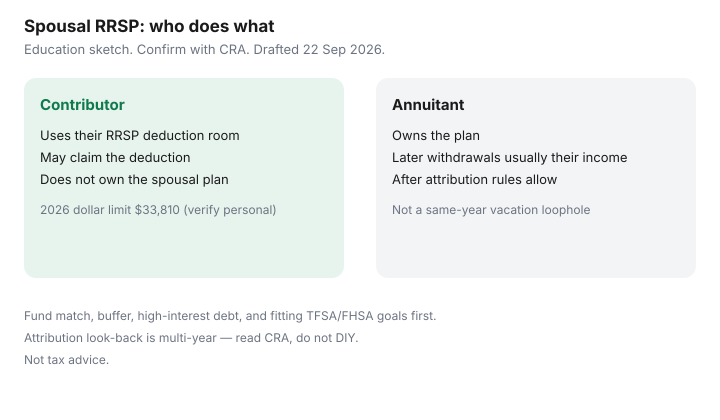

Personal Finance · Canada
Spousal RRSPs in Canada: When Income-Splitting Mechanics Help Household Tax
A spousal RRSP is not a romantic gesture and not a loophole brochure. One spouse or common-law partner contributes; the other is the annuitant who owns the plan. Done for the right income gap, it can support income splitting in retirement. Done without the attribution clock, it can bounce income back to the higher earner anyway.
This page explains contributor versus annuitant, when the mechanic tends to help, the three-year attribution idea at a high level, and how TFSA or FHSA priorities still come first for many households. Education only — not tax advice. CRA spousal and common-law partner RRSP pages were used 22 Sep 2026.
Disclosure: Brokerage RRSP and tax-software offers are offer types only. Saving Optimizer may later add partner links. We do not currently claim issuer or software partnerships. This is education, not tax advice. Confirm RRSP room and attribution outcomes with CRA materials or a qualified professional.
Key takeaways
- The contributor uses RRSP room and may claim the deduction; the annuitant owns the plan.
- Spousal RRSPs can help when one adult will likely face a higher retirement tax bracket than the other.
- Attribution can pull withdrawals back to the contributor across a multi-year window after contributions — read CRA, do not DIY a vacation withdrawal.
- Fund employer match, buffer, high-interest debt, and fitting FHSA/TFSA goals before optimizing a spousal plan.
- 2026 RRSP dollar limit is $33,810 — your personal limit is on the Notice of Assessment.
How contributor vs annuitant works in plain language
The contributor uses their own RRSP deduction room and claims the deduction (subject to their limit). The annuitant is the plan holder. Money and growth sit in the annuitant’s RRSP. Withdrawals are generally income of the annuitant — unless attribution rules pull that income back to the contributor for a period after contributions.
You need a spousal or common-law partner RRSP contract labelled that way. Contributing to your own RRSP and hoping a future pension-income split will fix everything is a different tool. Pension income splitting on a tax return is not the same as building room in a spouse’s plan during peak earning years.

| Role | What they do | What they do not do |
|---|---|---|
| Contributor | Uses their RRSP deduction limit; may claim the deduction. | Does not own the spousal plan; cannot treat it like a personal rainy-day account. |
| Annuitant | Owns the plan; eventual withdrawals are usually their income after attribution ends. | Does not get extra RRSP room from the spouse’s contribution — room came from the contributor. |
When a spousal RRSP can help a higher-income earner
Households where one adult will likely sit in a higher tax bracket in retirement than the other often look at spousal RRSPs so more future withdrawal income lands in the lower bracket. The contributor still needs unused RRSP room. The 2026 RRSP dollar limit is $33,810 (18% of prior-year earned income up to that ceiling, minus pension adjustments). Confirm your actual limit on the Notice of Assessment or in CRA My Account.
If both adults will have similar retirement income from pensions, CPP, and their own RRSPs, the splitting benefit may be small. If the lower-income spouse already has large RRSP assets, adding more may not change the household picture much. Run the mechanic only when the future gap is real enough to justify the paperwork — and after the boring priorities below.
Attribution rules and the 3-year clock (high level)
CRA’s attribution rules for spousal RRSPs generally look at contributions in the year of a withdrawal and the two preceding calendar years. If the contributor put money in during that window, a withdrawal can be taxed back to the contributor instead of the annuitant. The common household paraphrase is a three-year clock. It is a paraphrase. Formulas, exceptions, and planning around year-ends belong with a qualified tax professional or the CRA guide — not with a blog tip that says “wait 1,095 days and you are fine.”
Practical education point: do not contribute to a spousal RRSP in March and withdraw in April to “income split” a vacation. That is how attribution exists. Build the plan for retirement income years, not for next month’s cash.
Interaction with TFSA/FHSA priorities
Before funding a spousal RRSP for a distant split:
- Capture an employer match you will vest.
- Keep a one-month unregistered buffer.
- Attack revolving debt around 19%+.
- If a first home is the plan and you qualify, weigh FHSA room ($8,000 / $40,000, one-year carry-forward) — see FHSA vs TFSA.
- TFSA room remains useful when you want flexible, non-deductible savings without attribution complexity — RRSP vs TFSA first.
A spousal RRSP does not replace those steps. It is a refinement for the right couple after the foundation is funded.
Common mistakes that create tax headaches
- Contributing without checking the contributor’s unused RRSP room.
- Withdrawing from a spousal plan while the attribution window still covers recent contributions.
- Mixing personal and spousal plans at the same issuer without labelling which PAD hits which account.
- Assuming Home Buyers’ Plan or Lifelong Learning Plan rules feel identical in a spousal plan — verify issuer and CRA conditions before you treat the plan like a personal bridge.
- Ignoring the refund-loop calendar: deduction timing still follows contribution deadlines — RRSP timing.
An education-only decision checklist — not tax advice
- Are we spouses or common-law partners under CRA definitions we have actually read?
- Does the higher earner have unused RRSP room this year?
- Is the likely retirement income gap large enough to care about?
- Have we funded match, buffer, high-interest debt, and any FHSA/TFSA priorities that fit the goal?
- Can we leave the spousal plan untouched through the attribution window we understand from CRA materials?
- Have we written which login owns the plan and which PAD feeds it?
If any answer is “we are guessing,” pause and confirm with CRA My Account, the issuer, or a qualified advisor. This page does not prepare your return.
Sources & date stamps
- CRA, RRSPs and related plans — spouse or common-law partner RRSP; contributor and annuitant roles; attribution overview (used 22 Sep 2026).
- CRA — 2026 RRSP dollar limit $33,810; confirm personal limit on the Notice of Assessment or My Account.
- FHSA annual / lifetime figures $8,000 / $40,000 as on Saving Optimizer FHSA guides date-stamped with CRA materials used 22 Sep 2026.
Frequently asked questions
Does a spousal RRSP give my spouse extra RRSP room?
No. The contribution uses the contributor’s unused RRSP room. The annuitant owns the plan; they do not receive a second personal limit from the deposit.
Can we withdraw next year to split income now?
Usually a bad plan. Attribution rules can tax withdrawals back to the contributor when recent contributions sit inside CRA’s look-back window. Build for retirement, not for next month’s cash.
Is pension income splitting the same thing?
No. Splitting eligible pension income on a tax return is a filing mechanic. A spousal RRSP changes where capital sits before retirement. They can interact later; they are not interchangeable.
Should TFSA wait until the spousal RRSP is funded?
Not automatically. Flexible TFSA savings and any FHSA home plan often come before a distant splitting benefit. Use the checklist on this page.
Is this tax advice?
No. It is education. Confirm with CRA My Account, issuer documents, or a qualified tax professional before you contribute or withdraw.